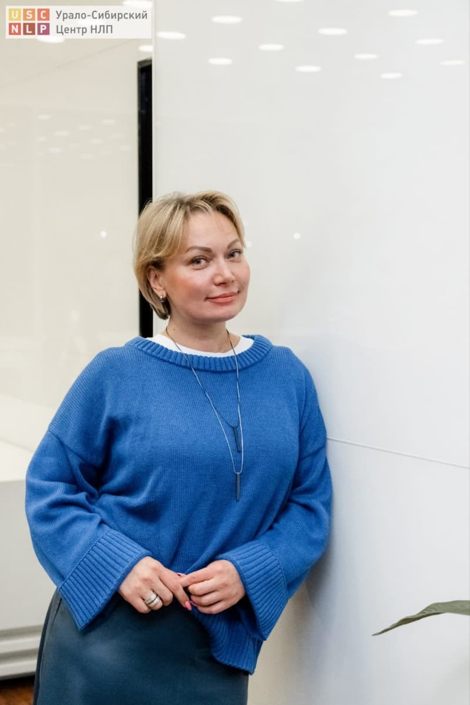
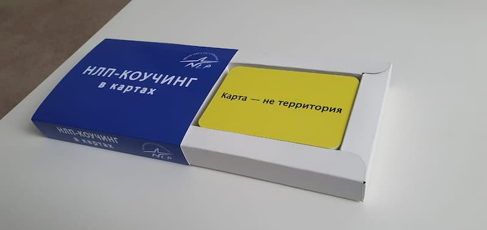
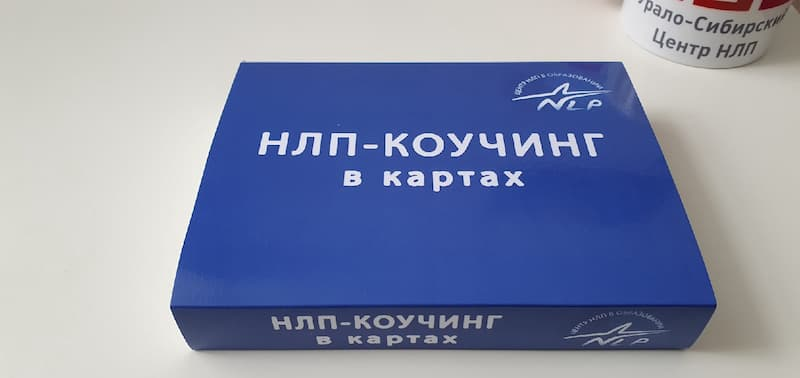

Я - психолог, гештальт-практик, НЛП-мастер, EMDR-терапевт. Работаю практически с любым запросом.
Исключения:
Изменения в жизни начинаются с внутренних перемен. Наши убеждения, неосознанные ценности, устоявшиеся модели поведения влияют на жизненные события. Наша реальность начинается с нас. Мы смотрим на жизнь своими глазами, совершаем действия и умозаключения через наши фильтры восприятия. Психотерапия помогает сделать жизнь ясной, понять природу наших реакций, действий. У меня большой опыт применения самых разных методик - от техник НЛП, помогающих меняться на поведенческом уровне до проективных методик (МАК, полевая терапия), с помощью которых можно увидеть глубину процессов. А когда появится ясность, можно сделать осознанный выбор - изменить текущее положение дел или оставить всё как есть. Отдельно хочу сказать о EMDR-терапии, созданной в прошлом веке для лечения ПТСР участников военных действий во Вьетнаме. С тех пор метод был доработан и успешно применяется сегодня для решения большого спектра запросов.

В психотерапевтической практике часто возникает необходимость в подручных средствах. Я часто сама придумываю разные техники и покупаю отдельные элементы просто. Например если работаю с границами, у меня есть длинные шнуры разного цвета, для контакта с внутренними ценностями есть полудрагоценные камушки и т.п. А когда училась на курсах нлп, мы рвали бумажки и на них писали то что по технике. Ну я и подумала, что это как-то несолидно - каждый раз рвать бумажки. Тогда появилось идея таких карт. Очень удобно😊

Эти карты созданы как для удобства практики так и для самокоучинга. Карточки с пресуппозициями можно встраивать в психотерапию. Оборотная сторона карт пустая - это для возможности сделать Ваши собственные пометки. Карты можно использовать как на полу, так и на столе, возможно встраивая в полевую терапию.
История создания этих карт началась с практической необходимости в удобных материалах для работы. Психолог, имея большой опыт применения различных методик – от техник НЛП до проективной терапии, пришла к идее создания универсального инструмента, который бы упростил процесс работы и сделал его более эффективным.
Типография «Лазурь» реализовала эту инновационную идею, обеспечив высокое качество полиграфического исполнения. Карты были напечатаны с учетом всех требований и пожеланий автора разработки.
Особенности карт:
Практическое применение карт позволяет:
Разработка психолога получила заслуженное признание в профессиональном сообществе благодаря своей практичности и универсальности. Типография «Лазурь» рада быть частью этого проекта, воплотив в жизнь инновационную идею специалиста.
+79122362791, WhatsApp, Telegramm